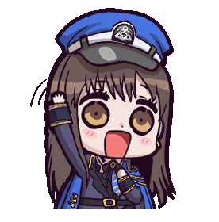
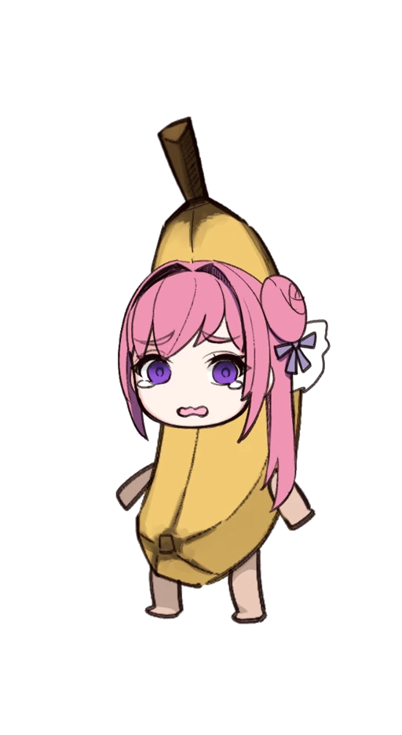

A
DSorter for Nikke characters. Pick your filters if desired, then hit the Start button.
Click on the Nikke you like better from the two, or hit Tie if you like them equally or don't know them.
Alt forms are left out by default for a character/popularity ranking. Pick "Both" on a card below for a full ranking, just be aware of the time increase.
Keyboard: A / D pick, Space tie, Z undo, X redo, Enter save. Arrow keys and Backspace work too.
More filters

Changelog
10/31/26 - Updated with latest Nikkepedia units.
10/31/26 - New start screen: picture cards for alt-form choices, collapsible filters, live Nikke count, dark mode.
04/13/25 - Updated image host to postimg due to catbox instability.
01/05/25 - Added overspec selection and made overspec nikkes default.
11/03/24 - Updated host to catbox since imgur is cringe and kept deleting sneedon and bunny soda.
07/22/24 - Improved end screen to show more portraits and allow a higher portrait limit.
12/12/23 - Launched based on HTML source code provided by Touhou Sorter.